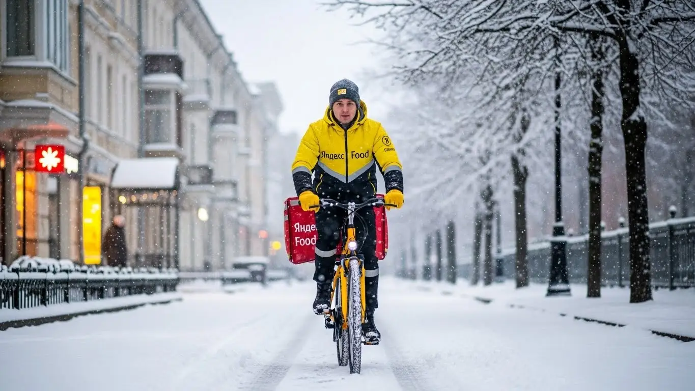
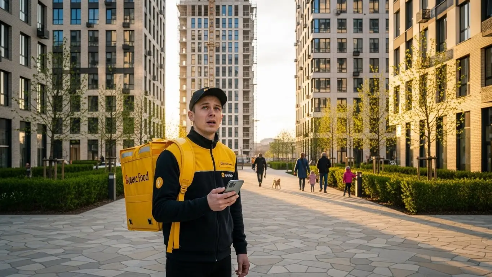
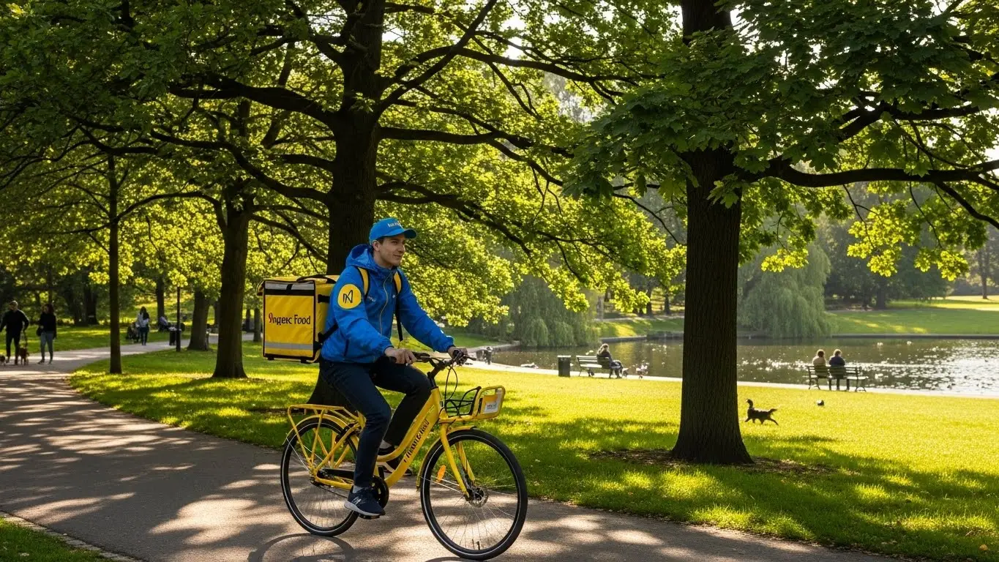
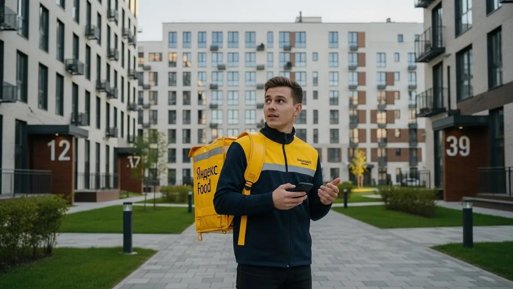
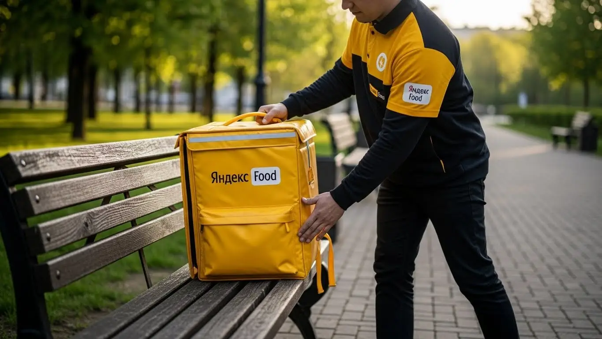

Работа курьером Яндекс Еда в Липецке: доход и условия в 2025-2026 году

- Работа курьером Яндекс Еды в Липецке: для кого эта вакансия и что вы получите
- Сколько вы будете зарабатывать курьером в Липецке: калькулятор дохода и разбор выплат
- Реальный заработок курьера в Липецке: смены и месячный доход
- График работы и форматы занятости
- Требования к кандидату и документы
- Самозанятость, налоги и юридическая чистота
- Пошаговое оформление и первый выход на линию в Липецке
- Пешком, на вело или на авто: что выгоднее в Липецке
- Районы, маршруты и «топовые» зоны заказов в Липецке
- Безопасность, страховка, штрафы и оплата простоя
- Плюсы и возможные минусы работы курьером в Липецке
- Реальные истории и отзывы курьеров из Липецка
- Ответы на главные вопросы о работе курьером Яндекс Еды в Липецке
- Короткие ответы на главные вопросы
- Итоги и ваш следующий шаг
Все города
Думаешь, работа курьером в Липецке — это просто включил приложение и поехал грести деньги лопатой? А как насчет вечных пробок на проспекте Победы в час пик, убитых дорог где-нибудь на Соколе или доставки в мороз минус двадцать? Многие видят только рекламу про «доход до 100 тысяч», но боятся штрафов, пустых смен и того, что «убьют» свою машину или велик за копейки. Я здесь, чтобы рассказать, как на самом деле устроена работа курьером Яндекс Еды и Яндекс Лавки именно в нашем Липецке, без прикрас.
Поверь, разница между тем, кто зарабатывает 2000 рублей за смену, и тем, кто уходит с 4000-5000, — не в удаче. Она в понимании «внутрянки». Это знание, где выше спрос, как работает приоритет, сколько реально уходит на бензин и налог с самозанятости, и почему доставка в новый микрорайон «Елецкий» может быть выгоднее, чем в центр. Если вы хотите сразу увидеть краткую сводку условий, калькулятор дохода и подать заявку, то вся официальная информация про работу курьером Яндекс Еда в Липецке собрана на отдельной странице. Большинство новичков в Липецке наступают на одни и те же грабли: берут невыгодные заказы, теряют рейтинг и в итоге разочаровываются, не проработав и месяца.
В этом гиде мы всё разберём по косточкам. Я покажу на реальных примерах, сколько можно заработать в Липецке пешком, на велосипеде и на авто. Посчитаем чистый доход с учётом всех расходов. Выясним, в каких районах города всегда есть заказы, а куда лучше не соваться. Расскажу, как липецкая погода — от летнего зноя до зимней каши на дорогах — влияет на заработок и как не нарваться на штрафы, которые съедят всю твою прибыль.
Меня зовут Алексей. Я сам не один год откатал с жёлтым рюкзаком по Липецку, а сейчас у меня свой небольшой таксопарк-партнёр. Я видел эту кухню со всех сторон — и как курьер на линии, и как тот, кто помогает ребятам подключаться и решать проблемы. Так что забудь про рекламные буклеты. Здесь будет только правда: где деньги, где подводные камни и как сделать так, чтобы работа курьером в Липецке приносила и доход, и удовлетворение. Сейчас всё разложу по полочкам.
Чтобы ты не запутался во всех этих деталях, я накидал короткий навигатор по статье. Загляни, чтобы сразу найти самое важное.
Что ты точно узнаешь из этого разбора по Липецку
В этой статье ты ТОЧНО узнаешь:
- Сколько реально можно заработать в Липецке за смену пешком, на велосипеде и на авто, и из чего складывается доход.
- В каких районах Липецка больше всего заказов и как погода, время суток и пробки на проспекте Победы влияют на заработок.
- Что выгоднее выбрать для Липецка — пешую доставку, велосипед или автомобиль, и в чём плюсы и минусы каждого варианта.
- За что на самом деле могут снизить рейтинг или оштрафовать, и как работает страховка и оплата простоя, если заказов мало.
- Как правильно оформиться самозанятым за 10 минут, какие документы нужны и можно ли начать работать с 16 лет.
А если тебе некогда читать всю статью — переходи сразу к заключению, где ты найдёшь короткие ответы на все эти вопросы и указания, в каких разделах искать подробности.
А вот наглядная инфографика о том, как распределяется доход курьера в Липецке.
Работа курьером в Липецке: ключевые цифры
Работа курьером Яндекс Еды в Липецке: для кого эта вакансия и что вы получите
Многие думают, что работа курьером — это что-то сложное или только для студентов. На самом деле, это одна из самых доступных и гибких вакансий в Липецке, которая подходит очень разным людям. Здесь нет начальников в привычном понимании, жёсткого графика и строгих требований к диплому — начать можно без опыта. Главное — твоё желание работать и зарабатывать. Система простая и прозрачная: выполнил заказ — получил деньги.
Кому подойдёт эта работа в Липецке
Эта вакансия, по сути, конструктор. Ты сам собираешь свой график и уровень дохода. Поэтому она идеально подходит студентам липецких вузов и колледжей, которым нужна подработка после пар. Можно выходить на пару часов вечером и в выходные, чтобы были деньги на свои расходы, и это не мешает учёбе.
Это также отличный вариант для тех, у кого уже есть основная работа, но нужен дополнительный заработок. Например, если у тебя сменный график 2/2, в свои выходные можно спокойно выполнить несколько заказов и получить хороший плюс к зарплате. Водители на личном авто тоже найдут здесь выгоду: заказы есть всегда, а доход курьера на автомобиле выше, чем у пеших. И конечно, это хороший старт для новичков: здесь не нужно проходить долгих собеседований, всё обучение проходит онлайн, а к первой доставке можно приступить уже на следующий день.
Главные преимущества для жителей районов Университетский, Елецкий, МЖК
Одно из главных удобств — возможность работать прямо в своём районе. Тебе не нужно тратить час-полтора на дорогу до «офиса», стоять в пробках на проспекте Победы или улице Космонатов. Просто выходишь из дома, включаешь приложение «Яндекс Про» и начинаешь выполнять заказы рядом.
Например, если ты живёшь в микрорайоне Университетский, твоя рабочая зона — это десятки кафе, пиццерий и магазинов прямо под боком. То же самое касается и новых районов, таких как Елецкий или старый добрый МЖК. Там всегда высокий спрос на доставку, особенно в вечернее время. Ты отлично знаешь все дворы и короткие пути, что даёт преимущество в скорости и, как следствие, в заработке.
Краткое обещание по доходу и условиям
Если говорить о деньгах, то в Липецке активный курьер за полную смену (8–10 часов) может зарабатывать до 3500–4000 рублей. Если рассматривать это как подработку на 3–4 часа в день, можно рассчитывать на 1200–1800 рублей. В месяц при полной занятости, особенно на автомобиле, доход может достигать 80 000–90 000 рублей и даже больше. Важно понимать, что это не оклад, а твой заработок напрямую зависит от тебя.
Ключевые условия работы максимально простые. Во-первых, это свободный график — ты сам решаешь, когда и сколько работать. Во-вторых, ежедневные выплаты: деньги за выполненные заказы приходят на карту практически сразу, не нужно ждать конца месяца. В-третьих, для старта не нужен опыт — всему научат в процессе короткого онлайн-инструктажа. Чтобы стать курьером, достаточно иметь смартфон и желание зарабатывать.
Кейс из практики: У меня в парке есть парень, студент ЛГТУ, живёт в районе Университетского. Он выходит на линию после учёбы, часа на 4. Работает как пеший курьер, берёт заказы в своём же районе. Стабильно делает 1300–1500 рублей за вечер. Говорит, что это идеальный вариант подработки: и на карманные расходы хватает, и от учёбы не отвлекает, и всегда в движении.
Краткий вывод: Работа курьером в Липецке — это не просто вакансия, а гибкий инструмент для заработка, доступный практически каждому. Главные плюсы — свободный график и возможность работать в своём районе, что экономит силы и время. Мой совет новичкам: не гонитесь сразу за самыми выгодными зонами в центре, начните со своего района. Так вы быстрее освоитесь и начнёте стабильно зарабатывать без лишнего стресса.
Сколько вы будете зарабатывать курьером в Липецке: калькулятор дохода и разбор выплат
Сразу скажу честно: фиксированной зарплаты у курьера нет. И это, на мой взгляд, плюс, а не минус. Твой доход — это сумма нескольких составляющих, и на большинство из них ты можешь напрямую влиять, работая как самозанятый партнёр сервиса. Это не та работа, где ты отсидел положенные часы и получил оклад. Здесь всё зависит от твоей активности, скорости и умения выбирать правильное время и место для доставки. Давай разберём по полочкам, из чего складываются твои выплаты.
Из чего складывается доход курьера
Твой заработок — это не просто плата за один заказ из ресторана. Он состоит из нескольких частей, ведь ты можешь доставлять не только еду, но и посылки (Яндекс Доставка) или продукты из дарксторов (Яндекс Лавка). Во-первых, это базовая оплата за подачу в ресторан или магазин и доставку клиенту. Во-вторых, доплата за расстояние — чем дальше везти заказ, тем больше денег ты получишь. Система всё считает автоматически, тебе не нужно замерять километраж.
Кроме того, есть повышающие коэффициенты. В часы пик (обед с 12 до 15, ужин с 18 до 21), в плохую погоду или в зонах с очень высоким спросом стоимость заказов умножается на определённый коэффициент. В приложении «Яндекс Про» такие зоны подсвечиваются, и работать там выгоднее всего. Также есть персональные бонусы за выполнение определённого числа заказов в день или неделю. Не забывай про чаевые — они полностью твои, сервис не берёт с них комиссию.
И самое важное, что отличает сервисы Яндекса, — это защита твоего времени. Если ты вышел на запланированный слот, а заказов мало, тебе начисляется оплата простоя. Ты не будешь сидеть бесплатно. А для водителей-курьеров на очень дальних заказах может быть и компенсация проезда.

Как пользоваться калькулятором дохода
Чтобы ты мог прикинуть свой потенциальный заработок ещё до начала работы, на сайте есть специальный калькулятор. Пользоваться им очень просто. Сначала выбираешь свой город — Липецк, а затем указываешь, как планируешь доставлять заказы: пешком, на велосипеде или на личном автомобиле.
Далее ты двигаешь ползунки, устанавливая, сколько часов в день и сколько дней в неделю готов работать. Калькулятор, основываясь на средних данных по Липецку, мгновенно покажет примерный диапазон твоего дневного и месячного дохода. Это, конечно, не стопроцентная гарантия, но очень хороший ориентир, чтобы понять, на какие цифры можно рассчитывать при разной степени занятости.
Прикинь свой возможный доход в Липецке
8 часов
5 дней
Примерный доход в месяц:
Расчёт основан на средней ставке 450 ₽/час для Липецка. Реальный доход зависит от спроса, бонусов и вашего рейтинга.
Поиграй с цифрами, чтобы составить общее представление. А если хочешь увидеть более точные условия, актуальные вакансии и сразу подать заявку, загляни на страницу про работу курьером Яндекс Еда в твоём городе — там собрана вся официальная информация.
Примеры расчёта для пешего, вело- и авто‑курьера в Липецке
Давай на конкретных примерах, чтобы было понятнее.
- Пеший курьер. Работает в центре, в районе площади Петра Великого и улицы Ленина. Здесь много офисов и кафе. За 4-часовой слот в обеденное время он может выполнить 6–8 заказов. Средний доход за такую смену составит примерно 1200–1600 рублей.
- Велокурьер. Выбирает для работы спальные районы, например, от 19-го микрорайона до МЖК. На велосипеде он передвигается быстрее пешего, поэтому за 6-часовую смену может сделать 12–15 заказов. Его заработок будет в районе 2200–2800 рублей.
- Водитель-курьер на авто. Работает полный день, 8–10 часов. Он не привязан к одному району и может брать дорогие заказы на большие расстояния, например, из гипермаркета «Лента» на окраине в центр или доставлять заказы в пригород. В плохую погоду его доход резко возрастает за счёт коэффициентов. За смену он может заработать 4000–5500 рублей и больше.
Сравнение типов доставки в Липецке
| Параметр | Пеший курьер | Велокурьер | Автокурьер |
|---|---|---|---|
| Средний доход в час | 300–450 ₽ | 400–550 ₽ | 500–700 ₽ (без учёта расходов) |
| Оптимальные зоны | Центр, плотная застройка (ул. Ленина, пл. Соборная) | Спальные районы (МЖК, Университетский, Елецкий) | Весь город, пригород, заказы из гипермаркетов |
| Плюсы | Нет расходов на транспорт, полезно для здоровья | Скорость, маневренность, экономия на проезде | Комфорт, большие и дорогие заказы, высокий доход |
| Сложности | Физическая нагрузка, зависимость от погоды, медленная скорость | Нужен свой велосипед, усталость, сезонность | Расходы на бензин и амортизацию, пробки в центре |
Кейс из практики: Один из моих водителей, Сергей, поначалу выходил на подработку только по вечерам. Но потом заметил закономерность: как только в Липецке начинается сильный дождь или снегопад, на карте в «Яндекс Про» загораются фиолетовые зоны с максимальными коэффициентами. Теперь он специально отслеживает прогноз погоды. В один из таких дождливых вечеров пятницы он за 3 часа сделал почти 3000 рублей — столько раньше зарабатывал за целый день спокойной работы.
Краткий вывод: Твой заработок курьером — это не случайность, а результат твоих действий. Он складывается из множества факторов, на которые ты можешь влиять. Используй калькулятор для планирования, но помни, что реальные цифры зависят от твоей стратегии. Мой совет: изучи карту спроса в приложении, не бойся работать в пиковые часы и плохую погоду — именно тогда и зарабатываются самые большие деньги.
Реальный заработок курьера в Липецке: смены и месячный доход
Давай сразу к главному — к деньгам. Никаких заоблачных обещаний, только реальные цифры, которые ты можешь заработать в Липецке, сотрудничая с сервисами Яндекса. Заработок курьера — это не фиксированный оклад, а результат твоей активности и умения выбирать правильное время и место. Сумма в конце дня зависит от того, как ты работаешь: просто катаешься по городу в ожидании чуда или выходишь на линию с чётким планом. Я расскажу, на что можно рассчитывать при разных форматах занятости и как выжимать максимум из каждой смены.
Диапазон дохода для подработки и полной занятости
Приведённые цифры — это средний доход за смену в Липецке уже за вычетом комиссии сервиса. Они актуальны для самозанятого курьера, то есть без учёта налога (НПД) и расходов на топливо.
Если ты ищешь подработку на 2–4 часа в день, например, после основной работы или учёбы, расклад примерно такой:
- Пеший курьер: 600–1200 рублей за смену. Идеально для центра, где всё рядом.
- Велокурьер: 800–1600 рублей. На велосипеде ты мобильнее, успеваешь сделать больше заказов в плотной застройке, например, в новых микрорайонах.
- Курьер на автомобиле: 1200–2200 рублей. На машине ты берёшь дальние и дорогие заказы, но часть дохода съедает бензин.
При полной занятости, когда ты работаешь по 8–10 часов в день с одним выходным в неделю, цифры совсем другие. Это уже полноценная работа, где месячная зарплата выглядит солидно.
- Пеший курьер: 2000–2800 рублей в день, что в месяц выходит около 45 000–60 000 рублей.
- Велокурьер: 2500–4000 рублей в день, или 55 000–80 000 рублей в месяц.
- Автокурьер: 3500–5500 рублей в день. В месяц это может доходить до 75 000–110 000 рублей «грязными». Отсюда вычитай топливо (5–10 тысяч в месяц) и амортизацию.
Как район, время суток и погода влияют на доход
Твой заработок — это не просто плата за доставку. Условия работы и итоговый доход сильно зависят от трёх вещей: где, когда и в какую погоду ты на линии. В приложении «Яндекс Про» есть карта спроса — зоны, подсвеченные разными цветами, от жёлтого до фиолетового. Чем ярче цвет, тем выше повышающий коэффициент и, соответственно, твой заработок.
В Липецке самые прибыльные зоны — это центр (Советский район, район площади Петра Великого), где много офисов и ресторанов, а также крупные ТРЦ вроде «Ривьеры» и «Европы». Вечерами и в выходные спрос на доставку еды смещается в спальные районы: «Университетский», «Елецкий», 20-е микрорайоны. Пиковое время — обед с 12:00 до 14:00 и ужин с 18:00 до 21:00. Пятница и выходные — это твой звёздный час.
Погода — твой лучший друг. Как только начинается дождь, снегопад или сильная жара, большинство курьеров предпочитают сидеть дома, а вот количество заказов в Яндекс Еде и Доставке резко растёт. Коэффициенты взлетают, и за один заказ можно получить в 1,5–2 раза больше обычного. Плюс, в плохую погоду клиенты чаще оставляют щедрые чаевые из благодарности.
Советы по увеличению заработка от опытных курьеров
Чтобы не просто работать, а именно зарабатывать, нужно подходить к делу с умом. Вот несколько проверенных советов. Во-первых, планируй свои выходы. Не выходи на линию в случайное время, а бронируй плановые слоты в приложении на пиковые часы — вечера и выходные. Это даст тебе приоритет в получении заказов.
Во-вторых, изучи свой город. Не гоняйся за каждым фиолетовым пятном на карте. Выбери 1-2 зоны, где ты хорошо ориентируешься. Для пеших и велокурьеров это центр или густонаселённые новые микрорайоны. Для автокурьеров выгоднее работать на стыке районов, выполняя длинные доставки, например, с Левого берега в Октябрьский район или развозя продукты из гипермаркетов по всему городу.
В-третьих, будь эффективен. Не трать время на пустые споры с персоналом ресторана, будь вежлив с клиентами. Хороший рейтинг и положительные отзывы напрямую влияют на количество заказов. Иногда, если работаешь на машине, выгоднее припарковаться за углом и пройти 300 метров пешком, чем кружить по дворам в поисках места у подъезда.
Вот недавний пример из практики. Парень-велокурьер обычно работает по вечерам в районе «Елецкого», зарабатывает по 1200-1500 рублей за 4 часа. В прошлую пятницу пошёл сильный ливень. Он не испугался, надел дождевик и вышел на слот. В итоге из-за высокого коэффициента и щедрых чаевых за те же 4 часа он привёз домой почти 3000 рублей.
В общем, твой доход в Липецке — это не лотерея, а результат твоего подхода. Работай в пиковые часы, не бойся плохой погоды и знай свой район. Мой совет новичкам: не пытайтесь сразу объять необъятное, начните со своего района, а когда освоитесь, переходите в зоны повышенного спроса.
График работы и форматы занятости
Главный плюс этой работы — свободный график. Ты сам решаешь, когда и сколько тебе работать. Никаких начальников, стоящих над душой, и жёсткого расписания с 9 до 6. Это идеальный вариант для тех, кто хочет совмещать работу с учёбой, другим делом или просто ценит личное время. Но чтобы эта свобода приносила деньги, её тоже нужно правильно организовать.

Подработка после учёбы или основной работы
Совмещать доставку с чем-то ещё — проще простого. Это самый популярный формат, особенно среди молодёжи и тех, кому нужен дополнительный доход. Главное — правильно выбрать время для выходов на линию, чтобы не работать впустую.
Пример первый: студент ЛГТУ. Живёт в общежитии, есть велосипед. Он выходит на линию 3-4 раза в неделю после пар, примерно с 18 до 22 часов. В основном катается по своему району и центру. В субботу может отработать полный день. Такая подработка не мешает учёбе и приносит ему 20-25 тысяч рублей в месяц — отличные деньги на личные расходы.
Пример второй: менеджер в офисе, 35 лет. У него есть основная работа со стандартным графиком. Он использует свою машину, чтобы подрабатывать курьером на своём авто по вечерам в пятницу и на выходных. Берёт в основном крупные заказы из гипермаркетов или доставки еды в часы пик. Для него это не основной заработок, а способ покрыть расходы на бензин, обслуживание авто и отложить на отпуск. В месяц выходит дополнительно 30-40 тысяч рублей.
Полная занятость: как выглядит типичный день курьера
Если ты рассматриваешь доставку как основную работу, твой день будет строиться вокруг пиков спроса. Просто выходить на 8 часов и ждать заказов — неэффективно. Вот как выглядит день опытного автокурьера в Липецке, который работает на результат.
Он выходит на линию около 10 утра. Утром заказов из ресторанов мало, поэтому он выполняет доставки из магазинов в рамках Яндекс Доставки или по тарифу «Экспресс». Ближе к 12 часам дня он перемещается в центр, в район улицы Советской, где много бизнес-центров и начинается обеденный пик. С 12:00 до 15:00 — самое активное время, заказы идут один за другим.
Примерно с 15:00 до 17:00 наступает затишье. Это время для обеда, отдыха или выполнения одного-двух дальних заказов, чтобы переехать в другую часть города. А с 18:00 начинается вечерний пик. Курьер смещается в густонаселённые спальные районы — 19-й, 26-й, 27-й микрорайоны, где люди заказывают ужин домой. Активная работа продолжается до 21:00-22:00, после чего можно заканчивать смену.
Как планировать слоты и выходы через приложение «Яндекс Про»
Твой главный инструмент — это приложение «Яндекс Про». Через него ты не только получаешь заказы, но и планируешь свой график. Есть два типа смен: свободные и плановые. Свободный слот — это когда ты просто нажимаешь кнопку «На линию» и начинаешь работать. Плановый слот ты бронируешь заранее на определённое время и в определённом районе.
Я настоятельно рекомендую использовать плановые слоты. Во-первых, они часто идут с гарантированным минимальным доходом. Это значит, что даже если заказов будет мало, ты всё равно получишь оговоренную сумму за час. Во-вторых, у курьеров на плановых слотах есть приоритет при распределении заказов.
В приложении ты видишь карту Липецка с доступными для бронирования слотами. Выбирай те, что совпадают с пиковыми часами, и в районах с высоким спросом. Самое важное — пунктуальность. Начинать слот нужно вовремя, опоздания негативно влияют на твой рейтинг и активность. Система простая: чем ты надёжнее как исполнитель, тем больше хороших заказов тебе предлагает сервис.
Был у меня в парке парень, который вначале выходил на линию как придётся. За 4 часа в понедельник днём он мог заработать 500 рублей и жаловался на отсутствие заказов. Я ему посоветовал забронировать плановый слот на вечер пятницы в центре. В итоге за те же 4 часа он заработал 2000 рублей, потому что работал в пиковое время и с высоким приоритетом.
В итоге, свободный график — это не анархия, а умное планирование. Используй «Яндекс Про» для бронирования выгодных слотов, будь пунктуален и выходи на линию тогда, когда есть спрос. Мой совет: всегда старайся бронировать смены заранее, это дисциплинирует и обеспечивает стабильный доход.
Требования к кандидату и документы
Многих пугает, что для работы курьером нужен сложный пакет бумаг или особые навыки. На деле всё гораздо проще. Условия работы в Яндекс Еде и требования к кандидатам вполне адекватные — начать может практически любой, у кого есть смартфон и желание. Главное — заранее подготовить небольшой комплект документов, чтобы не терять время на старте.
Возраст, гражданство и базовые условия
Начнём с основ. Чтобы стать водителем-курьером, тебе должно быть не меньше 18 лет и, конечно, нужны права. Для пеших и велокурьеров есть хорошие новости, о которых расскажу ниже. По гражданству условия стандартные: паспорт РФ или одной из стран ЕАЭС (Беларусь, Казахстан, Армения, Кыргызстан). В последнем случае понадобится подтверждение легального пребывания в России.
Каких-то особых требований к здоровью нет, справку о спортивных разрядах никто не попросит. Но важно понимать: работа на ногах или велосипеде — это физическая нагрузка. Нужно быть готовым проходить по несколько километров за смену и носить термокороб с заказами весом до 10–15 кг. Если есть серьёзные проблемы со спиной или суставами, лучше трезво оценить свои силы. Курьеру на автомобиле в этом плане, конечно, проще.

Какие документы нужны для работы курьером
Чтобы оформление прошло быстро, собери всё необходимое заранее. Вот полный список документов, которые понадобятся для работы:
- Паспорт. Основной документ для подтверждения твоей личности и возраста. Для граждан ЕАЭС — национальный паспорт и документы, подтверждающие легальное пребывание (миграционная карта, регистрация).
- ИНН (Идентификационный номер налогоплательщика). Он нужен для оформления самозанятости. Если не помнишь свой номер, его легко найти за пару минут на сайте ФНС или на Госуслугах.
- Именная банковская карта. Деньги за заказы будут приходить именно на неё. Важно, чтобы карта была выпущена российским банком и принадлежала именно тебе. Карты родственников или друзей не подойдут.
- Медицинская книжка (ЛМК). Она требуется не всегда, но я настоятельно рекомендую её оформить. Для доставки заказов из ресторанов она часто не нужна, но если ты захочешь брать заказы из продуктовых магазинов, вроде «Пятёрочки» или «Магнита» в Липецке, без неё никак. Наличие медкнижки значительно расширит количество доступных тебе заказов.
- Водительское удостоверение (ВУ) и свидетельство о регистрации ТС (СТС). Это, само собой, только для тех, кто планирует работать на автомобиле.
Подготовь эти документы, и твоё оформление займёт минимум времени.
Можно ли работать с 16 лет и какие есть альтернативы
А теперь важный момент для молодых ребят. Да, в Яндекс Еде можно работать курьером с 16 лет. Это отличная подработка для студентов и школьников в Липецке, чтобы получить первый официальный заработок и опыт. Но есть несколько важных условий по закону.
Во-первых, доставлять заказы можно только пешим курьером или на велосипеде. За руль автомобиля — строго с 18 лет. Во-вторых, понадобится письменное согласие одного из родителей или опекуна. Это стандартная процедура, которая защищает и тебя, и сервис. В-третьих, твой рабочий день будет ограничен: никаких ночных смен и сокращённый график (обычно не более 24 часов в неделю), чтобы работа не мешала учёбе.
Альтернатив для подростков в Липецке не так много: можно раздавать листовки или помогать в кафе. Но, по моему опыту, работа курьером в Яндекс Еде — один из самых понятных, безопасных и официальных способов для 16–17-летних ребят заработать свои первые деньги.
Недавно помогал с оформлением племяннику, ему 19, учится в ЛГТУ. Он думал, что всё будет сложно, но на деле справился за день. Паспорт и карта у него были, ИНН нашёл на Госуслугах за минуту. Вечером заполнил анкету, на следующий день прошёл короткое онлайн-обучение прямо в приложении Яндекс Про и вышел на первую смену в районе Быханова сада. За 3 часа его доход составил около 1200 рублей — был очень доволен.
Как видишь, пакет документов для старта стандартный, а возрастные рамки гибкие. Главный совет — не откладывай подготовку. Собери всё заранее, и сможешь выйти на линию и получить первые деньги уже на следующий день после регистрации.
Самозанятость, налоги и юридическая чистота
Многих новичков отпугивает слово «самозанятость». Кажется, что это что-то про налоги, отчёты и бюрократию. На самом деле, это самый простой и легальный формат работы с сервисом, который придумали, чтобы избавить тебя от бумажной волокиты. Такое оформление не сложнее, чем завести аккаунт в соцсети, зато твой доход будет полностью официальным.
Почему курьеры Яндекс Еды работают как самозанятые
Работа в статусе самозанятого (или, по-научному, плательщика налога на профессиональный доход — НПД) — это прямой договор между тобой и сервисом. Ты не сотрудник в штате с начальником и жёстким графиком, а независимый партнёр. Именно это даёт свободу выбора, когда и сколько работать.
Во-первых, это легальность. Весь твой доход — «белый». Ты можешь, например, взять кредит или получить визу, подтвердив заработок официальной справкой. Во-вторых, это простота. Никаких бухгалтеров и поездок в налоговую. Все расчёты происходят автоматически. В-третьих, это прозрачность. В приложении Яндекс Про ты всегда видишь, сколько заработал, и какой налог с этой суммы будет уплачен. Никаких «серых» схем и выплат в конверте.
Можно работать и через парк-партнёра, но тогда придётся платить ему комиссию. Самозанятость — самый прямой и выгодный путь, который даёт полный контроль над своими деньгами и позволяет получать ежедневные выплаты.
Как за 10 минут оформить самозанятость через «Мой налог»
Процесс регистрации элементарный и занимает от силы 10 минут, выходить из дома не нужно. Вот пошаговая инструкция:
- Скачай приложение «Мой налог». Оно есть в Google Play и App Store, это официальное приложение от ФНС России.
- Запусти регистрацию. Самый быстрый способ — «По паспорту РФ». Приложение попросит отсканировать главный разворот паспорта, и данные заполнятся сами.
- Подтверди личность. Приложение попросит сделать селфи, чтобы система убедилась, что регистрируешься именно ты.
- Выбери регион. Укажи «Липецкая область». Это важно для правильного расчёта налога.
- Готово! Придёт СМС или push-уведомление об успешной регистрации.
Весь процесс интуитивно понятен. После этого останется привязать свой статус в приложении «Яндекс Про», и система будет передавать данные о твоих доходах в налоговую автоматически.
Сколько и как платить налоги
Теперь о самом главном — о деньгах. Налог для самозанятых — один из самых низких в стране. Ты платишь 6% с доходов, полученных от юридических лиц. Поскольку Яндекс Еда — это юрлицо, именно эта ставка будет применяться ко всему твоему заработку от сервиса. Чаевые от клиента на карту облагаются налогом в 4%, но их нужно вносить в приложение «Мой налог» вручную.
Процесс уплаты максимально автоматизирован, считать ничего не нужно. Приложение «Яндекс Про» само передаёт информацию о твоих выплатах в «Мой налог». До 12-го числа каждого месяца там будет формироваться квитанция с суммой налога за предыдущий месяц. Оплатить её нужно до 28-го числа прямо в приложении с любой банковской карты в один клик.
Это гораздо проще и безопаснее, чем работать неофициально и переживать из-за вопросов со стороны налоговой. Уплата небольшого налога — это цена за спокойствие, официальный статус и все преимущества легальной работы.
У меня есть знакомый из Липецка, ему лет 35, раньше на НЛМК работал, потом ушёл на вольные хлеба и стал автокурьером. Его больше всего пугала эта «самозанятость», думал, что там декларации и очереди. Я показал ему, как скачать «Мой налог». Он зарегистрировался за 5 минут прямо в машине у себя во дворе. В первый месяц его доход составил около 70 000 рублей. В середине следующего месяца в приложении пришёл налог — 4200 рублей (те самые 6%). Он нажал одну кнопку, оплатил и выдохнул. Сказал, что зря боялся, всё оказалось проще, чем оплатить коммуналку.
Так что не стоит бояться этого статуса. Самозанятость — это современный инструмент для твоего удобства, который делает работу с Яндекс Едой полностью прозрачной и законной. Мой совет: проходи регистрацию смело, это откроет тебе путь к стабильному и официальному доходу.
Пошаговое оформление и первый выход на линию в Липецке
Многих новичков, которые ищут подработку без опыта, пугает процесс оформления — кажется, что это долго и сложно. На деле всё устроено так, чтобы ты мог выйти на линию и получить первый доход максимально быстро, часто в тот же день. Система работает онлайн, и бегать по офисам с документами не придётся. Главное — просто следовать шагам в приложении.
Шаг 1–2: анкета и онлайн‑обучение
Всё начинается с простой анкеты на сайте. Вопросов про предыдущий опыт или образование там нет — нужны только базовые данные: ФИО, дата рождения, номер телефона. После этого тебе предложат скачать приложение «Яндекс Про» — это твой главный рабочий инструмент. Там же ты загрузишь фото необходимых документов, например, паспорта. Система проверит данные, обычно это занимает от 15 минут до пары часов.
Как только документы одобрят, откроется доступ к короткому онлайн-обучению. Это не нудные лекции, а несколько коротких видео и тестов. Тебе расскажут об основах работы: как правильно общаться с клиентами и сотрудниками ресторанов, как обращаться с термосумкой, что делать в нестандартных ситуациях. Тесты простые, на логику и понимание базовых правил сервиса. Прошёл их — и ты практически готов к работе.

Шаг 3: получение сумки и доступа к заказам в Липецке
Следующий этап — получение фирменной экипировки, в первую очередь термосумки или термокороба. Без них доставлять заказы из ресторанов нельзя, это одно из главных условий работы. В Липецке сумку и другую брендированную одежду можно получить в специальных центрах для курьеров или у партнёров сервиса. Не нужно искать адреса в интернете — как только ты пройдёшь обучение, в приложении «Яндекс Про» появится карта с актуальными точками и их графиком.
Приезжаешь в удобное место, показываешь свой профиль в приложении, получаешь жёлтую сумку, и твой аккаунт полностью активируют. С этого момента ты видишь на карте доступные заказы и можешь планировать свои первые выходы на линию. Весь процесс от получения экипировки до полной активации обычно занимает не больше получаса.
Шаг 4: первый слот и первый доход
Теперь самое интересное — первые заработанные деньги. В приложении «Яндекс Про» ты увидишь карту Липецка, поделённую на зоны, и сможешь выбрать слот. Это временной промежуток, в который ты планируешь работать, что обеспечивает тот самый свободный график. Для начала советую выбрать короткий слот на 3–4 часа в своём районе, где ты хорошо знаешь дворы и подъезды. Так будет спокойнее, и ты быстрее втянешься в процесс.
Выбрав слот и зону, ты нажимаешь кнопку «На линию» и начинаешь получать заказы. Приложение само строит маршрут до ресторана и потом до клиента. Твоя задача — аккуратно и вовремя доставить заказ. Оплата за выполненные заказы начисляется сразу, а благодаря системе ежедневных выплат ты видишь свой доход в реальном времени. Многие ребята зарабатывают свои первые 1000–1500 рублей уже в первый же вечер.
Из недавнего, был у меня парень, студент из ЛГТУ. Искал подработку. Заполнил анкету утром, пока сидел на паре. К обеду прошёл обучение и съездил за сумкой. Вечером взял слот на 4 часа в районе МЖК, где живёт. Спокойно, без спешки выполнил 6 заказов и заработал около 1200 рублей, плюс ему ещё чаевые оставили. Говорит, не ожидал, что всё окажется так просто и быстро.
В итоге, весь процесс от анкеты до первого рубля на балансе занимает всего несколько часов. Система максимально понятна, чтобы убрать лишние барьеры. Мой совет: не откладывай, просто пройди эти четыре шага, и ты сам увидишь, что стать курьером в Липецке действительно легко.
Пешком, на вело или на авто: что выгоднее в Липецке
Выбор транспорта — ключевой момент, который напрямую влияет на твой доход, усталость и даже на то, какие заказы ты будешь получать. В Липецке у каждого формата есть свои сильные и слабые стороны. Нет универсального ответа, что лучше, — всё зависит от твоих целей, физической формы и того, в каких районах города ты планируешь работать.
Пеший курьер: для центра и плотной застройки в Липецке
Если у тебя нет машины или велосипеда, пеший формат — отличный старт. Он идеально подходит для центральной части города: улицы Советская, Ленина, Первомайская, район Нижнего парка и Городища. Здесь сосредоточено огромное количество кафе, ресторанов и офисов. Заказы, как правило, на короткие дистанции — 1-2 километра, но их очень много, особенно в обеденное время и по вечерам.
Главный плюс пешего курьера в центре — ты не зависишь от пробок, которые в часы пик сковывают улицы Зегеля или Плеханова. Пока водители стоят на светофорах, ты спокойно срезаешь путь через дворы и парки. Да, много заказов за час не выполнишь, но за счёт их высокой плотности и минимальных расходов можно показывать стабильный заработок. Это, по сути, оплачиваемая прогулка по городу.
Велокурьер: быстрые доставки между спальными районами
Велосипед — это золотая середина. Ты значительно быстрее пешего курьера и мобильнее водителя в условиях плотной застройки. Этот формат идеален для работы в крупных спальных районах Липецка, таких как Университетский, Елецкий или МЖК. Расстояния между домами там приличные, пешком не набегаешься, а на машине постоянно ищешь место для парковки. Велосипед решает обе эти проблемы.
На велосипеде ты можешь брать заказы на 3–5 километров, что увеличивает их стоимость. Ты легко объезжаешь пробки на проспекте Победы или улице Московской и можешь за час выполнить больше доставок. К тому же это отличная физическая нагрузка — по сути, оплачиваемый фитнес. Многие ребята, которые начинали пешком, со временем покупают велосипед, потому что видят, как это напрямую увеличивает их дневной доход.
Водитель‑курьер: заказы по всему городу и пригороду Сырское, Косыревка
Автомобиль открывает доступ к самым дорогим и дальним заказам, а значит, и к самой высокой зарплате. Этот формат незаменим, если ты хочешь работать по всему Липецку, включая отдалённые районы вроде Тракторного, Сокола или Матырского. Также на машине выгодно возить заказы в пригород, например, в Сырское или Косыревку. Такие доставки оплачиваются значительно выше.
Водитель-курьер особенно в выигрыше в плохую погоду — в дождь или снегопад количество заказов резко возрастает, а число пеших и велокурьеров на линии падает. Это время самых высоких коэффициентов. Кроме того, на машине можно выполнять доставку крупных заказов или работать с доставкой из гипермаркетов. Да, есть расходы на бензин и амортизацию, но при грамотном подходе доход их с лихвой перекрывает.
У меня в парке есть водитель, который работает курьером только по вечерам в пятницу и в выходные. Он специально выбирает слоты в зонах с высоким спросом и берёт только дальние заказы, например, с центра на ЛТЗ или в новые микрорайоны за Окружной. За 5-6 часов такой работы в пиковые дни он стабильно привозит 3500–4500 рублей. Говорит, что это выгоднее, чем пытаться конкурировать с велокурьерами за короткие заказы в центре.
В конечном счёте, выбор транспорта зависит от твоих личных обстоятельств. Если живёшь в центре и нужна простая подработка — начинай пешком. Если есть велосипед и ты в хорошей форме — это твой шанс зарабатывать больше. А если есть машина и ты готов работать в пиковые часы по всему городу — это путь к максимальному доходу. Мой совет: начни с того, что у тебя уже есть, а дальше посмотришь по ситуации. Перейти с одного формата на другой можно в любой момент.
Районы, маршруты и «топовые» зоны заказов в Липецке
Чтобы в Липецке стабильно зарабатывать курьером, мало просто крутить педали или руль. Нужно понимать город, знать, где и когда «клюёт». Это как рыбалка: можно просидеть с удочкой впустую, а можно за пару часов натаскать полную сумку. Я за второй вариант, поэтому давай разберёмся, где в нашем городе деньги лежат.
Главное правило — заказы от Яндекс Еды и Доставки появляются там, где есть люди и деньги. Это торговые центры, деловые кварталы и места отдыха. В Липецке есть несколько железобетонных точек притяжения, где в обед и вечером приложение Яндекс Про буквально горит фиолетовым цветом от повышенного спроса.
Где больше всего заказов: ТРЦ, бизнес‑центры и туристические места
Во-первых, это крупные ТРЦ. Два главных магнита — «Ривьера» на улице Катукова и «Европа» на Советской. Там огромные фуд-корты, десятки ресторанов и магазинов. Люди заказывают еду в офисы поблизости, домой после шопинга или прямо на работу. В пятницу вечером и в выходные здесь стабильно высокие коэффициенты, потому что спрос превышает количество свободных курьеров. Это отличное место для старта смены.
Во-вторых, деловой центр города. Район площади Петра Великого, улицы Ленина, Первомайская — здесь сосредоточены офисы и банки. С 12 до 15 часов идёт волна заказов на бизнес-ланчи. Вечером отсюда же заказывают ужины домой. Кроме еды, часто попадаются и доставки документов. Работать здесь особенно удобно пешему курьеру — всё компактно, а водитель-курьер в час пик может застрять в пробке.
Летом к этому списку добавляются зоны отдыха. Нижний парк, Быханов сад, набережная — люди отдыхают и охотно заказывают пиццу, роллы или напитки. Такие заказы часто бывают с хорошими чаевыми, если сработать быстро и вежливо.
Работа в своём районе: примеры для популярных жилых кварталов
Многие думают, что весь доход только в центре, и каждый день мотаются через весь город. Это ошибка, которая съедает время и бензин. Хороший заработок можно обеспечить и в своём районе, особенно если ты живёшь в крупном «спальнике». Там тоже полно кафе, магазинов и, главное, — голодных людей.
Например, микрорайон «Университетский». Здесь много студентов и молодых семей, поэтому вечером и в выходные спрос на доставку огромный: от фастфуда до продуктов из ближайших магазинов. Похожая история в новых районах вроде «Елецкого» — там много новостроек, люди ещё не обжились и часто заказывают готовую еду.
Или взять старые, но густонаселённые районы, как МЖК в районе улиц Кривенкова и Катукова. Здесь на каждом шагу пиццерии и суши-бары, подключённые к доставке. Работая здесь, ты экономишь время на дороге, отлично знаешь все дворы и подъезды, а значит, выполняешь заказы быстрее и больше зарабатываешь. Это отличный вариант для подработки.
Как выбирать зоны и слоты в «Яндекс Про», чтобы не мотаться впустую
Приложение «Яндекс Про» — твой главный инструмент. Карта в нём — это не просто картинка, а карта денег. Зоны, где спрос сейчас самый высокий, подсвечиваются разными оттенками фиолетового. Чем насыщеннее цвет — тем выше повышающий коэффициент и твой итоговый заработок.
Мой совет: не гоняйся за одним «жирным» заказом через весь город, если после него ты окажешься в «мёртвой» зоне. Лучше выполнить 3–4 заказа подряд с хорошим коэффициентом в одной-двух соседних фиолетовых зонах. Планируй свой маршрут. Если видишь, что в твоём районе тихо, а в центре всё «горит» — есть смысл сместиться туда.
Также важно грамотно использовать слоты. Плановые слоты — это когда ты заранее бронируешь время и район работы. За это сервис часто даёт бонусы и приоритет в заказах. Свободные слоты — это возможность выйти на линию в любое время. Новичкам я советую начинать с плановых слотов в знакомом районе, чтобы втянуться в ритм.
Из практики: один мой знакомый велокурьер за 4-часовой вечерний слот в пятницу получил доход около 2000 рублей. Он начал у ТРЦ «Европа», развёз несколько заказов по центру, а когда спрос там начал спадать, сместился в сторону Октябрьского района, где как раз начинался вечерний пик. Он не стоял на месте, а следовал за «фиолетовыми зонами» на карте.
В общем, главный секрет хорошего заработка в Липецке — это знание города и умение читать карту спроса в приложении. Не сиди на месте в ожидании чуда, а двигайся туда, где есть заказы. Но и не забывай про свой район, который может стабильно кормить без лишних поездок.
Безопасность, страховка, штрафы и оплата простоя
Работа курьера — это не только заработок, но и определённые риски. Ты постоянно в движении, на дороге, общаешься с разными людьми. Поэтому важно говорить не только о деньгах, но и о том, как работать безопасно. В Яндекс Еде этому уделяют серьёзное внимание, и у тебя есть инструменты защиты, о которых нужно знать.
Система построена так, чтобы защитить и курьера, и клиента, и репутацию сервиса. Если ты соблюдаешь правила, то и система будет на твоей стороне. Давай разберёмся по порядку.
Бесплатная страховка на сменах и что она покрывает
Самое важное: как только ты выходишь на активный слот, твоя жизнь и здоровье застрахованы. Это бесплатно, ничего дополнительно оформлять не нужно, всё работает автоматически. Страховая сумма — до 2 миллионов рублей.
Что это значит на практике? Если во время доставки ты, не дай бог, попадёшь в ДТП, упадёшь с велосипеда и сломаешь руку или поскользнёшься зимой на льду — страховка покроет расходы на лечение. Это реальная помощь, которая даёт уверенность. Ты не остаёшься один на один с проблемой. Главное в такой ситуации — сразу же сообщить о случившемся в службу поддержки через приложение.
Правила безопасности на дороге и при доставке
Страховка — это хорошо, но лучше до страховых случаев не доводить. Элементарные правила безопасности сэкономят тебе нервы и здоровье.
- Для пеших курьеров: переходи дорогу только по переходу, а в тёмное время суток носи светоотражающие элементы.
- Для велокурьеров: обязательно используй шлем и фонари, соблюдай ПДД. Не нужно лететь сломя голову, пытаясь выиграть 30 секунд.
- Для водителей-курьеров: не нарушай скоростной режим и паркуйся аккуратно. В плохую погоду, будь то липецкий ливень или гололёд, будь вдвойне осторожен.
Лучше опоздать на пару минут и предупредить клиента, чем рисковать. Кроме того, аккуратно обращайся с заказом, особенно с напитками. Если заказ оплачивается наличными — всегда имей при себе размен.
Какие бывают штрафы и как их избежать
Давай честно: штрафы и снижение рейтинга в системе есть. Но их применяют не за случайные мелкие ошибки, а за систематические или грубые нарушения условий работы. Никто не будет наказывать тебя, если ты один раз опоздал на 5 минут из-за огромной пробки.
Основные причины санкций: грубость клиенту или сотруднику ресторана, порча заказа по своей вине и попытка это скрыть, регулярные опоздания на начало слота, отмена уже принятого заказа без уважительной причины. Избежать этого просто: будь вежлив, планируй своё время и, если с заказом что-то случилось, сразу пиши в поддержку.
Что такое оплата простоя и как она защищает ваш доход
А теперь о приятном. Это одна из ключевых фишек, которая отличает Яндекс Еду от многих других сервисов. Представь: ты вышел на плановый слот, находишься в нужной зоне, готов работать, а заказов временно нет. В большинстве других мест это означало бы нулевой доход. Но здесь работает «оплата простоя».
Сервис гарантирует тебе минимальный доход за час, даже если заказов не было совсем. Система видит, что ты на линии и готов к работе, и компенсирует твоё время. Это своего рода финансовая подушка безопасности, которая защищает твой заработок в часы низкого спроса и даёт уверенность, что ты не потратишь время и топливо впустую.
Был у меня случай с парнем-автокурьером. Он взял утренний слот в новом районе, где ресторанов было ещё мало. За первый час пришёл всего один заказ. Он уже начал нервничать, но по итогу часа увидел в приложении доплату за простой. Она не только покрыла его расходы на бензин, но и обеспечила минимальный доход за это время.
В итоге, система работает в обе стороны. От тебя требуется ответственность и соблюдение правил, а сервис со своей стороны даёт тебе защиту в виде страховки и финансовых гарантий. Если подходить к работе с умом, никаких проблем не будет.
Плюсы и возможные минусы работы курьером в Липецке
Как и в любом деле, здесь есть две стороны медали. Я всегда говорю парням честно: работа хорошая, но не для всех. Важно понимать, какие условия тебя ждут, чтобы потом не было разочарований. Давай разберём по полочкам, что к чему в Липецке.
Сильные стороны работы курьером в Липецке
Главный козырь этой работы — свободный график. Ты сам себе начальник и сам решаешь, когда и сколько работать. Никто не стоит над душой с восьми до пяти. Можно выскочить на пару часов между парами, отработать полную смену в выходной или сделать доставку своей основной занятостью. Расписание полностью настраивается через приложение «Яндекс Про».
Второй жирный плюс — ежедневные выплаты. Забудь про ожидание зарплаты до 15-го числа. Деньги за выполненные заказы приходят на карту каждый день, что очень удобно для планирования бюджета или если срочно нужны наличные. Кроме того, ты работаешь официально как самозанятый. Это значит, что у тебя идёт подтверждённый доход, а налоги платить элементарно — 6% с поступлений от юрлиц, всё делается автоматом через приложение. Никакой беготни по налоговым и сложной бухгалтерии.
И, конечно, удобство. Можно выбрать район рядом с домом, например, в Университетском или Елецком, и выполнять заказы там, не тратя время и деньги на дорогу через весь Липецк. Плюс ко всему, ты не остаёшься один на один с проблемами. На смене действует бесплатная страховка жизни и здоровья, а служба поддержки всегда на связи в чате приложения, если возникнут какие-то вопросы по заказу.
С какими сложностями чаще всего сталкиваются курьеры
Будем честны, работа на ногах или на велосипеде — это физическая нагрузка. Особенно поначалу, пока не привыкнешь, к вечеру ноги могут гудеть. В Липецке рельеф в целом ровный, но если попадётся маршрут с подъёмом, например, в районе Сокола, это чувствуется. Поэтому важно иметь удобную обувь и одежду, а также адекватно оценивать свои силы.
Погода — наш второй «начальник». Работать в липецкий летний зной или в морозный январский день с метелью — то ещё испытание. С другой стороны, в плохую погоду всегда включаются повышенные коэффициенты, заказов больше, и чаевых оставляют охотнее. Главное — правильно экипироваться: летом кепка и вода, зимой — термобельё, непродуваемая куртка и тёплая обувь.
Иногда бывают простои, когда заказов меньше, чем обычно. Такое случается, например, в середине буднего дня. Чтобы не терять время, лучше выходить на линию в пиковые часы — обед (с 12:00 до 14:00) и вечер (с 18:00 до 21:00), а также в выходные. И, конечно, общение с клиентами. 99% людей — адекватные и вежливые, но изредка попадаются и недовольные. Тут главное — сохранять спокойствие, быть вежливым и, если что, сразу писать в поддержку.
Кому такая работа подходит, а кому лучше поискать другой формат
Эта работа идеально подходит активным и самостоятельным людям. Если ты студент, которому нужна подработка со свободным графиком, или человек, который не может сидеть в офисе и любит движение, — это твой вариант. Также это отличный старт для тех, кто ищет работу без опыта, или для водителей, желающих получать дополнительный доход на своём авто. Здесь важны самодисциплина, умение ориентироваться в городе и пунктуальность.
С другой стороны, если ты ищешь максимальной стабильности, предсказуемый доход до копейки и не любишь физическую активность, то лучше поискать что-то другое. Тем, кто тяжело переносит общение с незнакомыми людьми или не готов работать в разную погоду, курьерская доставка тоже может показаться сложной. В таком случае, возможно, стоит рассмотреть удалённую работу или стандартную офисную занятость.
Из практики: у меня был парень, который пришёл работать автокурьером в ноябре. Поначалу жаловался на погоду, пробки в центре в снегопад и на то, что заказы в частный сектор за городом — это грязь и плохие дороги. Но он быстро приспособился: купил хорошую зимнюю резину, в приложении стал выбирать слоты с повышенным спросом в спальных районах, где проще с парковкой. В итоге за декабрь, когда все делали заказы перед Новым годом, его заработок оказался почти в полтора раза больше, чем он рассчитывал.
В общем, работа курьером в Яндекс Еде в Липецке — это реальная возможность получать хороший доход, имея полную свободу в графике. Но она требует физической выносливости и умения подстраиваться под обстоятельства. Мой совет: если сомневаешься, попробуй начать с коротких слотов по 2–4 часа в своём районе, чтобы понять, подходит ли тебе такой формат.
Реальные истории и отзывы курьеров из Липецка
Цифры и условия — это одно, а живой опыт парней, которые каждый день на линии, — совсем другое. Я попросил нескольких курьеров из Липецка поделиться своими отзывами, чтобы у тебя сложилась полная картина.
История студента ЛГТУ, который совмещает учёбу и доставку
Меня зовут Кирилл, я учусь на третьем курсе в ЛГТУ. Живу в общежитии на Московской, поэтому работать начал в своём же районе. Сначала было страшновато, но освоился буквально за пару дней. Мой график простой: с утра до обеда я на парах, потом пару часов отдыхаю, делаю домашку, а с 6 вечера выхожу на 4-часовой слот. Обычно катаюсь на велосипеде, так быстрее.
Работаю в основном в Октябрьском и Советском районах — здесь много заказов из Яндекс Еды, хватает и кафе, и жилых домов. За вечер спокойно успеваю сделать 8–12 доставок. В среднем мой заработок за неделю выходит около 7–9 тысяч рублей, если не лениться. Этих денег мне с головой хватает на личные расходы, чтобы не просить у родителей. Главный плюс для меня — я сам строю свой график и никогда не пропускаю учёбу.
Опыт автокурьера, который выходит в пиковые часы
Я работаю системным администратором, график стандартный — 5/2. Машина часто простаивала, и я решил, что она может приносить дополнительный доход. В Яндекс Еду пошёл именно как водитель-курьер на подработку. Выхожу только в самое «жаркое» время: в будни на обеденный перерыв с 12 до 14 и вечером с 19 до 22, плюс обязательно работаю в субботу или воскресенье по 6–8 часов.
Беру в основном дальние заказы из центра, например, с улицы Советской, в спальные районы вроде МЖК или на Матырский. На машине это удобно, да и платят за километраж хорошо. Такой формат меня полностью устраивает: я не сильно устаю, получаю хороший дополнительный доход, который покрывает бензин, обслуживание авто и ещё сверху остаётся. За месяц выходит приятная прибавка к основной зарплате.
Мнение пешего или вело‑курьера о работе в центре и спальниках
Я работаю велокурьером уже полгода. Поначалу катался только по своему 19-му микрорайону, но потом осмелел и стал брать слоты в центре. Разница ощутимая. В центре, в районе площади Петра Великого или Театральной, заказы из Яндекс Еды сыплются один за другим, ресторанов куча. Но и минусы есть: много людей, приходится лавировать в потоке, иногда сложно найти, где припарковаться у входа в кафе.
В спальниках, например, в районе «Европейского», всё спокойнее. Дворы просторные, людей меньше, едешь себе в удовольствие. Но и заказы могут быть на большем расстоянии друг от друга. Лично мне больше нравится динамика центра — да, суетно, но зато и заработок в час выходит выше. К этому ритму просто нужно было привыкнуть, сейчас уже чувствую себя как рыба в воде.
В итоге, как видишь, каждый находит в этой работе что-то своё и выстраивает удобный для себя формат. Кто-то ценит возможность подработки, кто-то — стабильный доход при полной занятости, а кто-то — оплачиваемый фитнес на свежем воздухе. Мой совет: не бойся экспериментировать. В первые недели попробуй поработать и в центре, и в своём районе, в разное время суток, чтобы нащупать свой лучший вариант для заработка.
Ответы на главные вопросы о работе курьером Яндекс Еды в Липецке
Здесь я собрал ответы на те вопросы, которые мне задают чаще всего. Без воды, только по делу, чтобы у тебя не осталось сомнений и «белых пятен».
Ответы на ключевые вопросы кандидатов
Нужно ли оформлять самозанятость и как платить налоги?
Да, нужно. Работа курьером в Яндекс Еде — это официальный доход, поэтому основной формат сотрудничества — через самозанятость (НПД). Не пугайся этого слова, всё гораздо проще, чем кажется. Оформление занимает 10 минут через приложение «Мой налог», никаких поездок в налоговую. Ты просто привязываешь карту, и налог в 6% с дохода от Яндекса будет рассчитываться и списываться автоматически. Это честно, легально и избавляет от головной боли в будущем. Поверь, это в разы лучше, чем «серые» схемы с непонятными комиссиями.
Какие документы нужны для старта?
Пакет минимальный: паспорт РФ (или страны ЕАЭС с документами о легальном пребывании), ИНН для оформления самозанятости и любая именная банковская карта российского банка. Для автокурьеров — права и СТС. Медкнижка не всегда обязательна, но с ней будет больше заказов из продуктовых магазинов.
Какой телефон и интернет нужны для работы курьером?
Тебе понадобится смартфон на базе Android, версия не ниже 7.0. На айфонах приложение «Яндекс Про» для курьеров не работает, имей это в виду. Телефон должен быть шустрым, с хорошей батареей и работающим GPS, потому что приложение будет включено всю смену. Интернет нужен стабильный, мобильный — без него никуда. Мой тебе совет: сразу купи хороший пауэрбанк, потому что навигатор и приложение съедают заряд аккумулятора очень быстро.
Что будет, если в смену мало заказов — как работает оплата простоя?
Это одна из главных фишек Яндекса, которая отличает его от многих других сервисов. Если ты вышел на запланированный слот, система гарантирует минимальную оплату за час, даже если заказов в твоей зоне мало. Ты не будешь сидеть бесплатно. Например, если минималка 300 рублей в час, а ты за это время выполнил заказов только на 150 рублей, сервис доплатит тебе недостающие 150. Это твоя страховка от «пустых» часов и гарантия, что твоё время будет оплачено.
Есть ли в Яндекс Еде штрафы и за что их могут применить?
Давай начистоту: система штрафов есть, но правильнее называть это системой мотивации. Деньги напрямую у тебя никто не спишет за мелкую оплошность. Но если систематически нарушать правила — например, грубить клиентам, сильно опаздывать на слоты, портить заказы или отменять их без веской причины — твой приоритет в системе упадёт. А низкий приоритет означает, что выгодные заказы будут приходить реже. По сути, ты наказываешь сам себя. Если работать нормально и по-человечески, никаких проблем со штрафами у тебя не будет.
Сколько реально можно заработать курьером в Липецке и чем эта вакансия лучше других сервисов?
В Липецке цифры такие: если выходить на подработку на 4-5 часов в день, пеший или велокурьер может спокойно делать 1500–2500 рублей. На машине за полную 8–10-часовую смену доход может доходить и до 4000–5000 рублей, особенно в выходные или плохую погоду, когда действуют повышенные коэффициенты. Главное отличие от конкурентов — это экосистема Яндекса. Заказов много не только из ресторанов (Яндекс Еда), но и из магазинов (Яндекс Маркет), дарксторов (Яндекс Лавка) и в рамках сервиса Яндекс Доставка. Плюс, как я уже говорил, есть оплата простоя и бесплатная страховка на время смены — этого у многих других просто нет.
Можно ли работать без опыта и что будет на обучении?
Конечно, можно. Опыт работы вообще не требуется, всему научат. Обучение — это короткий онлайн-курс, который ты проходишь прямо в телефоне. Там будут небольшие видеоролики и тесты. Тебе расскажут, как пользоваться приложением «Яндекс Про», как правильно общаться с клиентами и представителями ресторанов, что делать в нестандартных ситуациях. Весь процесс занимает от силы пару часов. Прошёл, сдал тест — и можешь выходить на линию.
Берут ли с 16–17 лет и какие есть ограничения по возрасту?
Да, в Яндекс Еду берут с 16 лет, но с некоторыми условиями. Ты можешь работать как пеший курьер или велокурьер. Для этого понадобится письменное согласие от родителей или опекунов. По закону для несовершеннолетних есть ограничения: рабочий день короче, чем у взрослых, и нельзя работать в ночные смены. А вот водителем-курьером на автомобиле можно стать только с 18 лет, когда у тебя уже есть водительские права и стаж.
Короткие ответы на главные вопросы
Здесь мы собрали краткую шпаргалку по самым важным моментам из статьи.
Коротко по делу: ответы на главные вопросы
Короткие ответы на ключевые вопросы
Сколько реально можно заработать в Липецке за смену пешком, на велосипеде и на авто, и из чего складывается доход.
При подработке (2–4 часа) доход составляет 600–2200 ₽, при полной занятости на авто можно выйти на 75 000–110 000 ₽ в месяц. Заработок состоит из оплаты за заказ, доплаты за расстояние, повышающих коэффициентов в пиковые часы, бонусов и чаевых.
→ Подробнее читай в разделе «Реальный заработок курьера в Липецке: смены и месячный доход».В каких районах Липецка больше всего заказов и как погода, время суток и пробки на проспекте Победы влияют на заработок.
Больше всего заказов днём в центре (ТРЦ «Ривьера», «Европа», ул. Советская), а вечером — в спальных районах («Университетский», «Елецкий», МЖК). Дождь, снег и часы пик (12:00–14:00 и 18:00–21:00) резко увеличивают доход за счёт высоких коэффициентов.
→ Подробнее читай в разделе «Районы, маршруты и «топовые» зоны заказов в Липецке».Что выгоднее выбрать для Липецка — пешую доставку, велосипед или автомобиль, и в чём плюсы и минусы каждого варианта.
Пеший курьер идеален для центра с его пробками. Велосипед — для быстрых доставок между спальными районами. Автомобиль даёт самый высокий доход за счёт дальних заказов по всему городу и в пригород (Сырское, Косыревка), особенно в плохую погоду.
→ Подробнее читай в разделе «Пешком, на вело или на авто: что выгоднее в Липецке».За что на самом деле могут снизить рейтинг или оштрафовать, и как работает страховка и оплата простоя, если заказов мало.
Рейтинг снижают за грубость, порчу заказов и регулярные опоздания, что уменьшает количество выгодных заказов. На смене действует бесплатная страховка до 2 млн ₽. Если на плановом слоте нет заказов, сервис начисляет «оплату простоя», гарантируя минимальный доход.
→ Подробнее читай в разделе «Безопасность, страховка, штрафы и оплата простоя».Как правильно оформиться самозанятым за 10 минут, какие документы нужны и можно ли начать работать с 16 лет.
Самозанятость оформляется через приложение «Мой налог» по паспорту и ИНН, налог 6% рассчитывается автоматически. Работать пешим или велокурьером можно с 16 лет с согласия родителей, а водителем-курьером — строго с 18 лет.
→ Подробнее читай в разделе «Самозанятость, налоги и юридическая чистота».
Для полного понимания темы рекомендую прочитать всю статью — там ты найдёшь примеры, сравнения и дельные советы из практики.
Итоги и ваш следующий шаг
Краткие выводы по работе курьером в Липецке
Если коротко, работа курьером в Яндекс Еде в Липецке — это реальная возможность зарабатывать от 35 до 80 тысяч рублей в месяц, в зависимости от твоей занятости и способа передвижения. Главные плюсы — это абсолютно гибкий график, который ты сам себе составляешь, и ежедневные выплаты на карту. Условия прозрачные: ты видишь все начисления в приложении, а такие вещи, как оплата простоя и страховка, защищают твой доход и здоровье. На фоне других предложений в городе Яндекс выигрывает за счёт огромного потока заказов и чётко отлаженной системы.
Это не лёгкие деньги, работать придётся, но здесь твой заработок напрямую зависит от тебя. Для студентов, людей в поиске основной работы или тех, кому просто нужна надёжная подработка с понятными правилами, — это один из лучших вариантов в Липецке на сегодня.
Как сделать первый шаг уже сегодня
Начать проще, чем кажется. Никакой бюрократии и долгих собеседований.
- Заполни анкету. Это делается онлайн, займёт не больше 5–10 минут. Просто вводишь свои данные.
- Подготовь документы. Тебе понадобятся паспорт, ИНН и реквизиты банковской карты. Если тебе 16–17 лет — не забудь про письменное согласие от родителей.
- Пройди онлайн-обучение. Посмотришь короткие видео, ответишь на несколько вопросов в тесте. Это быстро и несложно.
- Получи сумку и выбери первый слот. В приложении увидишь, где в Липецке забрать фирменную термосумку. После этого можешь сразу выбирать удобный район, время и выходить на линию. Первые деньги могут прийти на твою карту уже сегодня вечером.